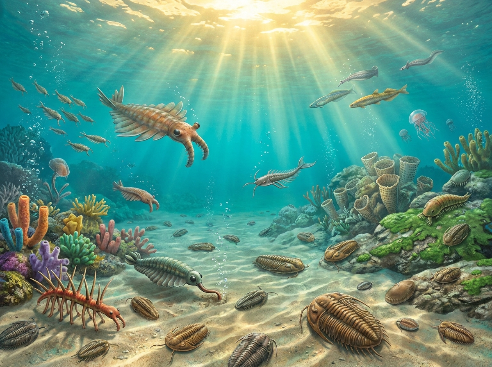

CHRONO-STRATIGRAPHY / 深时地质学
GEOLOGIC TIMELINE / 地质年代表
Deep-time evolutionary transitions across Earth's eras. Navigate tectonic movements, atmospheric shifts, and major life radiations from the Cambrian explosion to the Quaternary megafauna.
OPERATOR: GUEST | CLR: LEVEL 4

IMAGE PENDING / 图片待补
PALEOZOIC ERA
CAMBRIAN PERIOD / 寒武纪
541.0 - 485.4 million years ago / 5.41亿 - 4.85亿年前
Tectonic Activity & Geography / 地壳板块运动与地理
-
Evolutionary Milestones / 进化里程碑与主要生命事件
-
Dominant Archetypes / 主要优势与代表性古生物
-
Atmospheric Oxygen / 大气含氧量
-
Atmospheric CO2 / 大气CO₂浓度
-
Surface Temperature / 地表平均温度
-
Sea Level / 平均海平面高度
-
Major Events / 主要事件